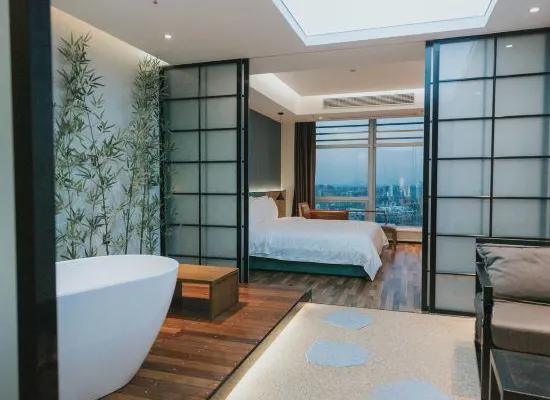
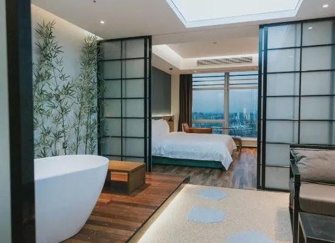
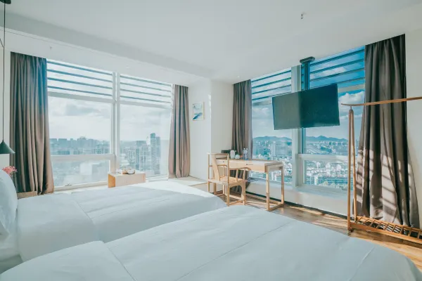
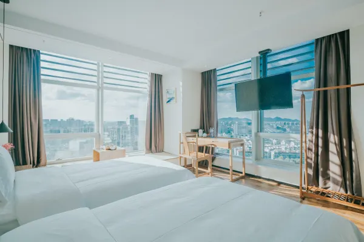

Ein Tag der Reise und Wiedervereinigung. Die Familie kommt in Hangzhou aus zwei Richtungen zusammen.
Tagsüber
Max + Margot: Flug Frankfurt → Hangzhou (direkt)
Tagsüber
Dion + Alex & Lynn: Flug Singapur → Hangzhou
Abends
Beide Gruppen landen am Flughafen Hangzhou Xiaoshan
~20:00
Transfer zum Wulin Jingyu Tingyuan Hotel; Familientreffen!
21:30
Spätes Abendessen bei 新白鹿 (Xin Bailu)
Separate Flughafentransfers vorbuchen (~280–400 RMB je).
 

 
